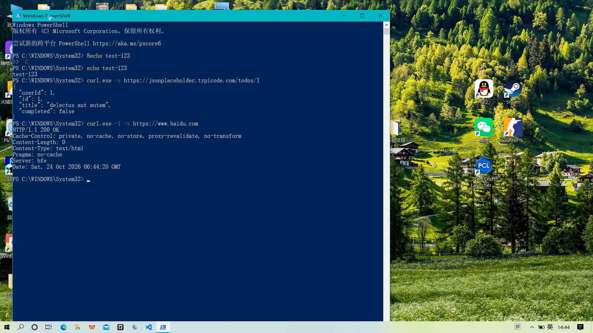

curl 基础用法与请求实验
curl 是一个命令行下传输数据的工具，支持 HTTP/HTTPS 等多种协议，常用来调试接口、查看响应头、下载文件等。在 Windows PowerShell 中使用时，命令名建议写成 curl.exe，避免和 PowerShell 自带的 curl 别名混淆。
一、环境与准备
打开 Windows PowerShell，先确认 curl 可用：
bash
curl.exe --version二、操作过程
1. GET 请求：获取 API 返回的 JSON 数据
使用 -s（silent）静默模式，不输出进度和错误信息，只显示返回的数据。
bash
curl.exe -s https://jsonplaceholder.typicode.com/todos/1输出结果：
json
{
"userId": 1,
"id": 1,
"title": "delectus aut autem",
"completed": false
}jsonplaceholder 是一个免费的测试 API，这里返回的是一条带
userId、title、completed 字段的待办数据。2. HEAD 请求：查看百度网页的响应头
-I 表示只请求响应头（HEAD 方法），不下载正文；配合 -s 保持输出干净。
bash
curl.exe -I -s https://www.baidu.com输出结果：
http
HTTP/1.1 200 OK
Cache-Control: private, no-cache, no-store, proxy-revalidate, no-transform
Content-Length: 0
Content-Type: text/html
Pragma: no-cache
Server: bfe
Date: Sat, 24 Oct 2026 06:44:20 GMT几个关键字段的含义：
- HTTP/1.1 200 OK：状态码 200，表示请求成功。
- Content-Type：响应内容的类型，这里是
text/html。 - Server: bfe：百度前端接入层（Baidu Front End）。
- Date：服务器返回的时间，采用 GMT 时区。
三、常用参数补充
| 参数 | 作用 |
|---|---|
-s | 静默模式，不显示进度和错误 |
-I | 只请求响应头（HEAD） |
-X | 指定请求方法，如 -X POST |
-H | 自定义请求头，如 -H "User-Agent: xxx" |
-d | 发送表单/JSON 数据（POST） |
-o | 把结果保存到文件 |
四、运行截图

五、小结
通过 GET 和 HEAD 两个实验，基本掌握了 curl 在命令行下发起请求、查看返回数据与响应头的方法。实际渗透测试或接口调试中，配合 -X、-H、-d 等参数可以完成更复杂的请求构造。